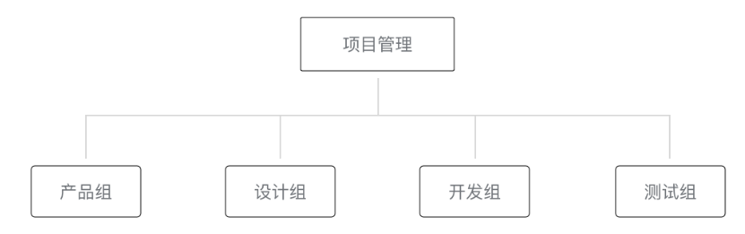

人员组织结构和权限分配
多数情况下，一个团队多人同时参与同一个小程序项目，每个角色所承担的工作或者权限不一样，中大公司的分工更为仔细。为了更形象的表达团队不同角色的关系以及权限的管理，我们通过虚拟一个项目成员组织结构来描述日常如何协同合作完成一个小程序的发布，组织关系如图5-1所示。

图5-1 虚拟小程序项目组
项目管理成员负责统筹整个项目的进展和风险、把控小程序对外发布的节奏，产品组提出需求，设计组与产品讨论并对需求进行抽象，设计出可视化流程与图形，输出设计方案。开发组依据设计方案，进行程序代码的编写，代码编写完成后，产品组与设计组体验小程序的整体流程，测试组编写测试用例并对小程序进行各种边界测试。项目一般的成员构成与工作流程如图5-2所示。

图5-2 提需求到发布小程序的流程
为了便于管理，小程序平台给不同角色定义了7种权限[2]，如表5-1所示。
表5-1 小程序平台的7种权限
权限 说明
开发者权限 可使用小程序开发者工具及开发版小程序进行开发
体验者权限 可使用体验版小程序
登录 可登录小程序管理后台，无需管理员确认
数据分析 使用小程序数据分析功能查看小程序数据
开发管理 小程序提交审核、发布、回退
开发设置 设置小程序服务器域名、消息推送及扫描普通链接二维码打开小程序
暂停服务设置 暂停小程序线上服务
管理者可以很方便分配这些权限给项目的各个组织成员，小程序的管理比传统的网页开发和App应用开发更为简单便捷。图5-1展示的虚拟组织的成员权限可以按照表5-2进行分配：
表5-2 虚拟组织成员的权限分配
成员 权限分配
项目管理组成员 拥有所有权限
开发组成员 开发者权限 / 体验者权限 / 数据分析
产品组成员 体验者权限 / 数据分析
测试组成员 体验者权限
需要留意，项目管理者控制整个小程序的发布、回退、下架等敏感操作，不应把敏感操作的权限分配给不相关人员。